السلسلة 96
السيارة (صنف B) · 25 سؤال بالصوت. حاول تجاوب بوحدك، من بعد شوف الجواب.
السؤال 1
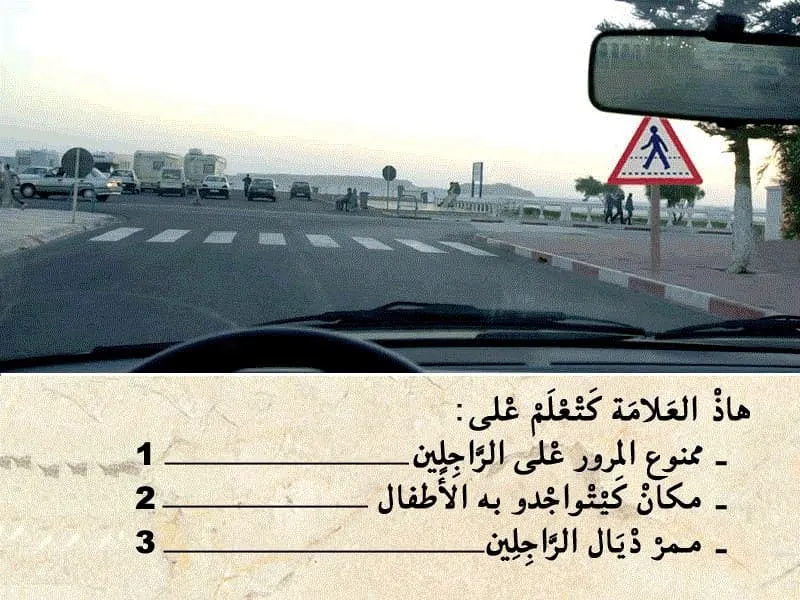
بيّن الجواب
الجواب الصحيح: 3
هذا العلامة . هي علامة ديال الخطر .
- كتعلم على ممر ديال الراجلين .
و بالتالي الجواب الصحيح هو رقم 3.
السؤال 2
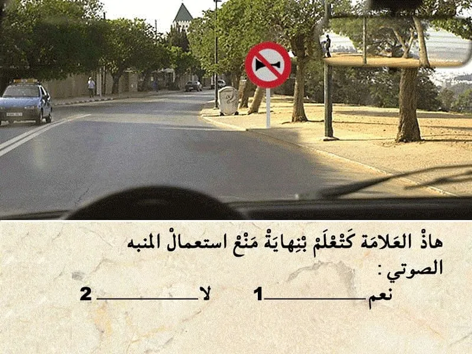
بيّن الجواب
الجواب الصحيح: 2
هذا العلامة ديال المنع.
كتعلم على انه ابتدأ من العلامة ،ممنوع استعمال المنبه الصوتي.
السؤال 3
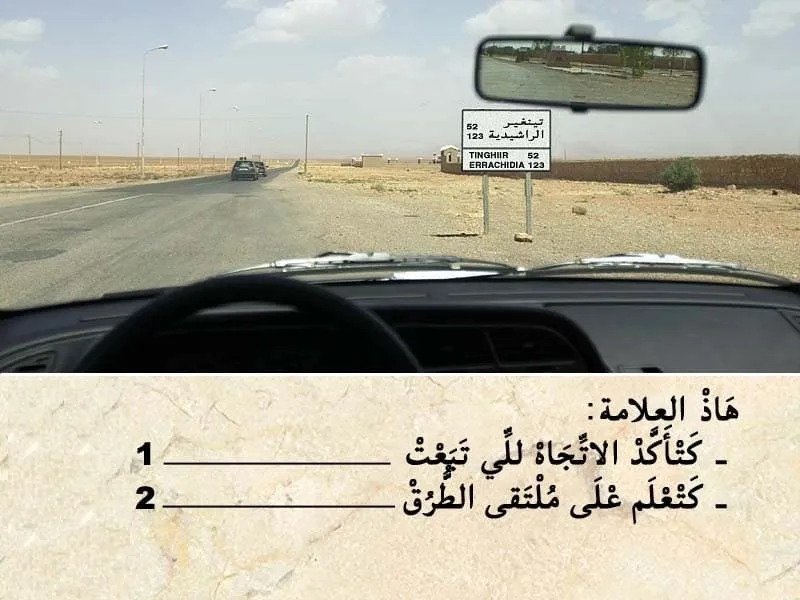
بيّن الجواب
الجواب الصحيح: 1
هذا العلامة ديال الإرشاد.
كتضم كتابة يعني اسم الوجهة "التجمع السكني " . و ارقام لي كتعلم على المسافة لي مزال ليا باش نوصل .
و بالتالي كتأكد الاتجاه لي تبعت.
السؤال 4
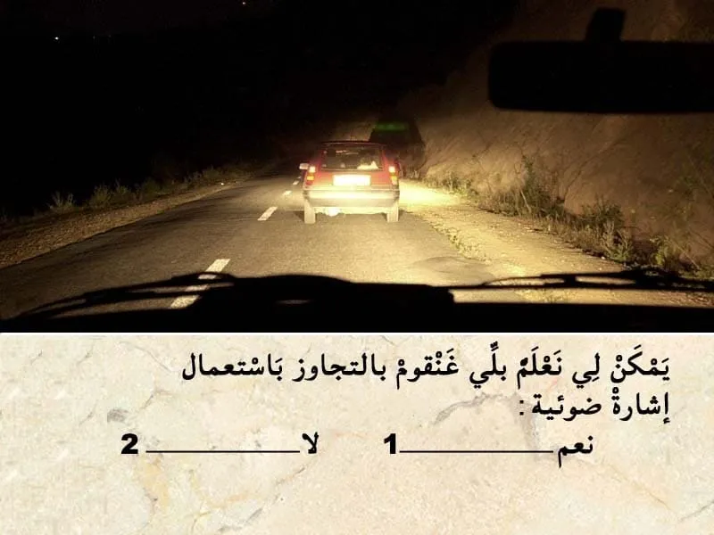
بيّن الجواب
الجواب الصحيح: 1
قبل التجاوز ، واجب عليا نشغل مؤشر تغيير الإتجاه .
بالإضافة يمكن لي نستعمل إشارة ضوئية باضواء الطريق.
السؤال 5
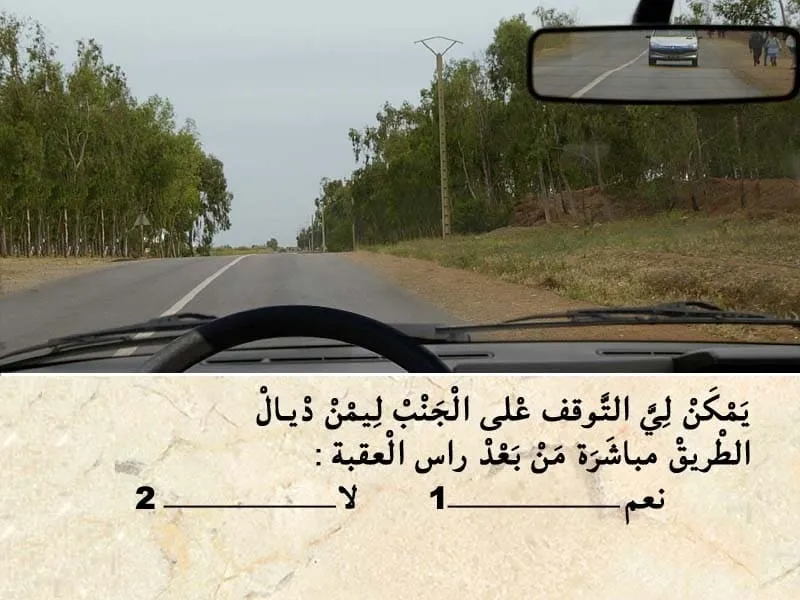
بيّن الجواب
الجواب الصحيح: 2
من بين الاماكن لي ممنوع التوقف فيها على جنب الطريق :
- رأس العقبة. واجب عليا نخلي مسافة امان بين و بين راس العقبة ديال 60 متر على الأقل.
- في المنعرج. واجب نخلي مسافة 50 متر بيني و بين المنعرج.
- و ملتقى الطرق . من الواجب ترك مسافة 10 متر قبل و بعد المنعرج.
السؤال 6

بيّن الجواب
الجواب الصحيح: 2
هذا العربة هي من العربات دات الأسبقية .
و مشعلة الضوء ديال الاستعجال و بالتالي واجب عليا نعطيها حق الأسبقية.
السؤال 7
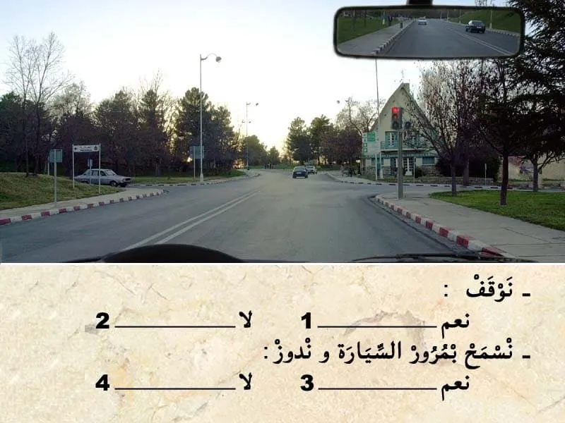
بيّن الجواب
الجواب الصحيح: 1 و 4
في هذا الحالة كاين الضوء الاحمر شاعل . و بالتالي واجب عليا نوقف و ننتظر حتى يشعل الضوء الخضر.
السؤال 8
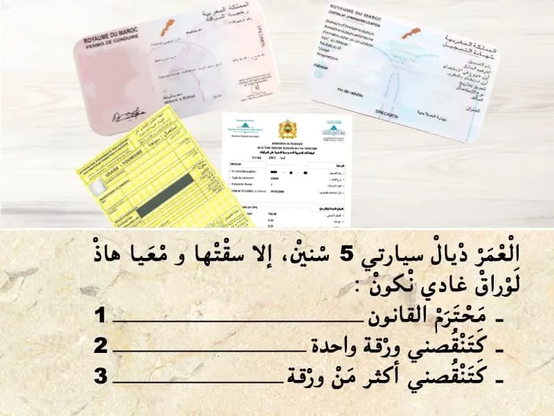
بيّن الجواب
الجواب الصحيح: 2
مجموع الأوراق لي من الواجب نتوفر عليها باش نسوق سيارة :
- رخصة السياقة.
- البطاقة الرمادية.
- شهاذة تأمين.
- الضريبة السنوية.
و في حالة تجاوز العمر ديالها 5 سنين. من الواجب التوفر على :
- شهادة الفحص التقني.
في هذا الحالة العمر ديال سيارتي 5 و بالتالي كتنقصني ورقة وحدة.
" شهادة الفحص التقني".
السؤال 9
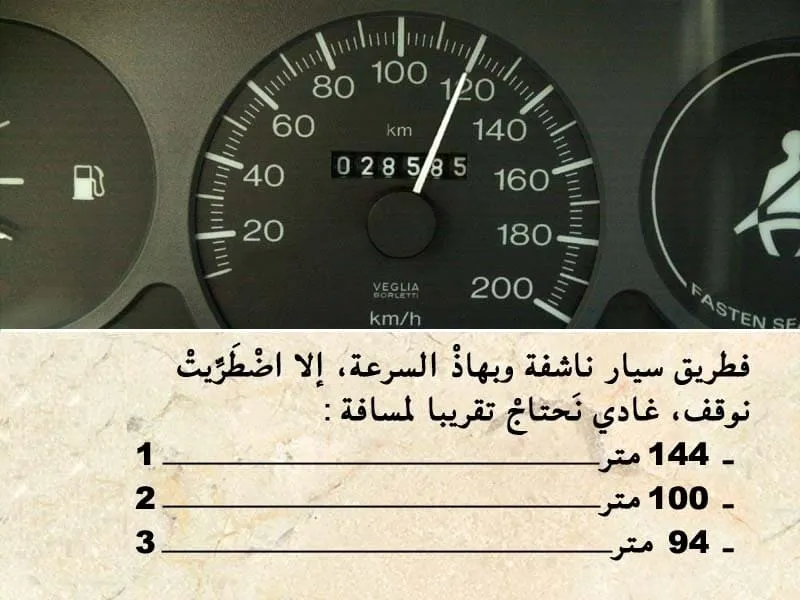
بيّن الجواب
الجواب الصحيح: 1
مسافة التوقف كيتم حسابها بالعلاقة التالية :
- العشر ديال الصعة مضروب في نفسه . يعني في هذه الحالة :
- السرعة 120 كلم في الساعة .
و بالتالي مسافة التوقف : 12*12=144 متر.
--- يعني الجواب رقم 1.
السؤال 10
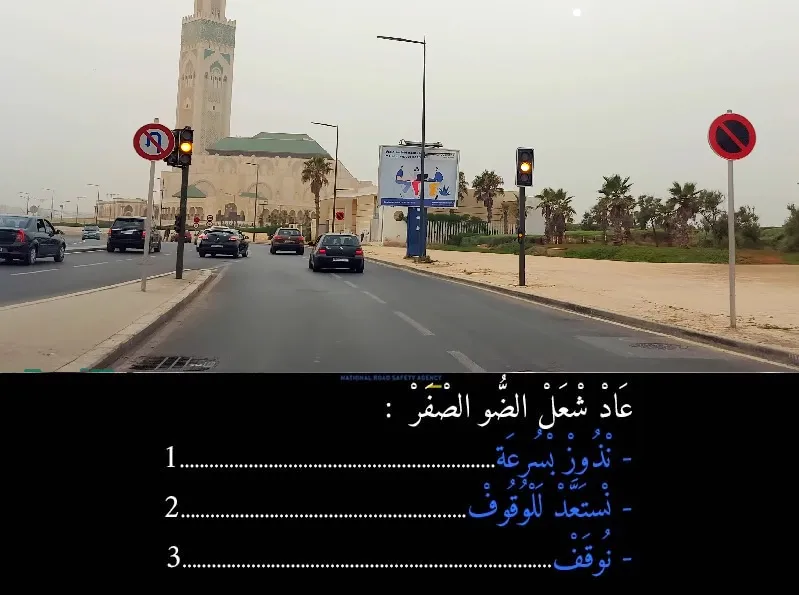
بيّن الجواب
الجواب الصحيح: 3
الإجابة الصحيحة المعتمدة في هذا السياق هي "التوقف" عند اشتعال الضوء الأصفر، فهذا يعني أن القواعد هنا تفسر الضوء الأصفر على أنه إشارة للتوقف الفوري إذا كان ذلك آمنًا، وليس فقط الاستعداد للوقوف.
في بعض الأنظمة، يعتبر الضوء الأصفر بمثابة "تحذير للتوقف" مع إمكانية المرور إذا كان التوقف المفاجئ غير آمن (مثل إذا كانت السيارة قريبة جداً من خط التوقف عند اشتعاله)، ولكن في أنظمة أخرى، يُلزم السائق بالتوقف عند الضوء الأصفر إذا كان ذلك ممكنًا بأمان.
بناءً على تصحيحك، الجواب الصحيح هو:
توقف ✅
السؤال 11

بيّن الجواب
الجواب الصحيح: 1
منين نلقى حادثة و ما تكونش رجال الاسعاف في عين المكان من الواجب عليا نوقف و نقدم الإغاثة بمجرد ما توفر لي الشروط المناسبة .
السؤال 12
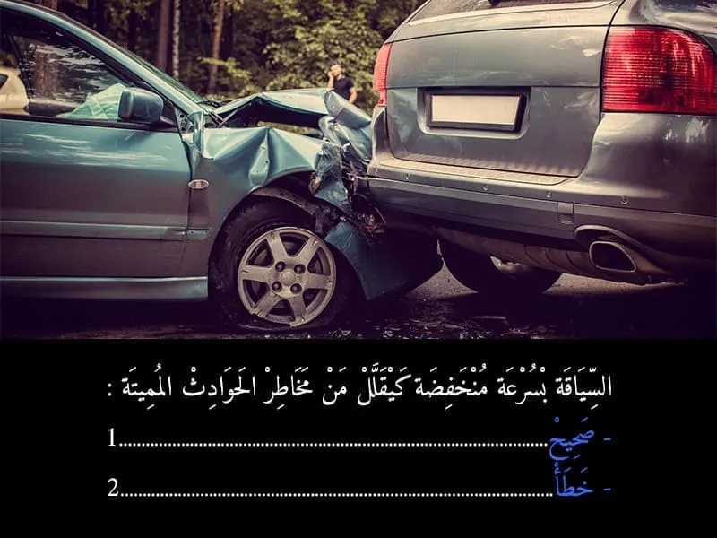
بيّن الجواب
الجواب الصحيح: 1
نعم السياقة بسرعة منخفظة كتقلل من مخاطر الحوادث المميتة.
السؤال 13

بيّن الجواب
الجواب الصحيح: 2
إذا لم يرتكب صاحب رخصة السياقة مخالفة معاقب عليها بخصم النقط داخل أجل سنة من التاريخ الذي حاز فيه آخر مقرر قضائي بالإدانة قوة الشيء المقضي به ومن تاريخ أداء آخر غرامة تصالحية وجزافية، يسترجع أربع (4) نقط.
السؤال 14
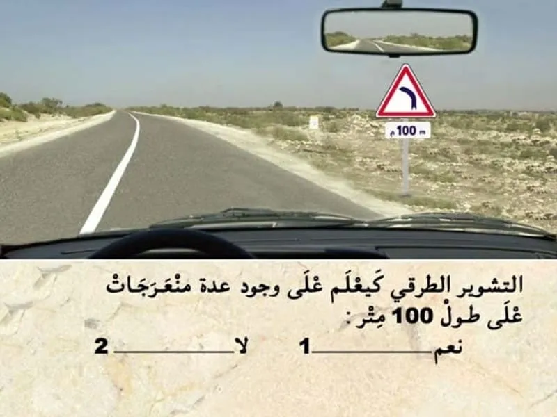
بيّن الجواب
الجواب الصحيح: 2
هذا العلامة ديال الخطر.
-كتعلم على منعرج خطير على ليسر . و ليس عدت منعرجات.
- الخطر خارج التجمع السكني كيكون على بعد 150 متر . و لكن العلامة التكميلية فيها 100 كلم في الساعة.
يعني الخطر كيتواجد على بعد 100 متر . و ليس على طول.
يعني الجواب الصحيح هو 2.
السؤال 15
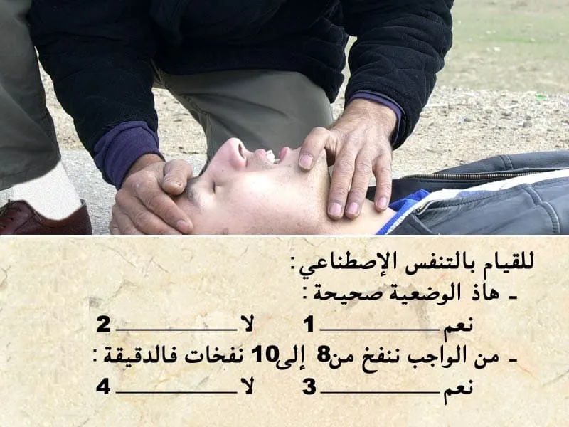
بيّن الجواب
الجواب الصحيح: 1 و 4
إغاثة الجرحى :
💡 في جميع الحالات يجب:
✔ إزالة الأشياء التي تعيق التنفس بالنسبة للمصاب؛
✔ تغطية الضحايا وكذا الجرحى لتفادي البرد؛
✔ التكلم مع المصابين والاطمئنان على حالتهم و التهدئة من روعهم ومحاولة إبقائهم في حالة وعي.
💡 في حالة التوفر على شهادة للإسعافات الأولية يجب :
✔ وضع المصاب على الجانب الأيمن وفي الوضعية الصحيحة (الوضعية الجانبية للسلامة أو وضعية الإفاقة)؛
✔القيام بعملية التنفس الاصطناعي إذا اقتضت الضرورة ذلك.
يقدر عدد النفخات بالنسبة للبالغين من 12 إلى 15 نفخة في الدقيقة مقابل 24 إلى 30 نفخة في الدقيقة بالنسبة للأطفال.
السؤال 16
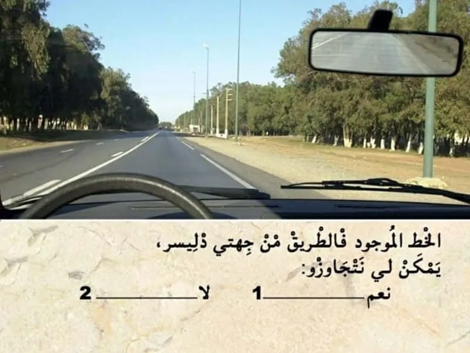
بيّن الجواب
الجواب الصحيح: 2
الخط الموجود في الطريق من جهتي دليسر متاصل يعني ممنوع نتجاوزو
السؤال 17
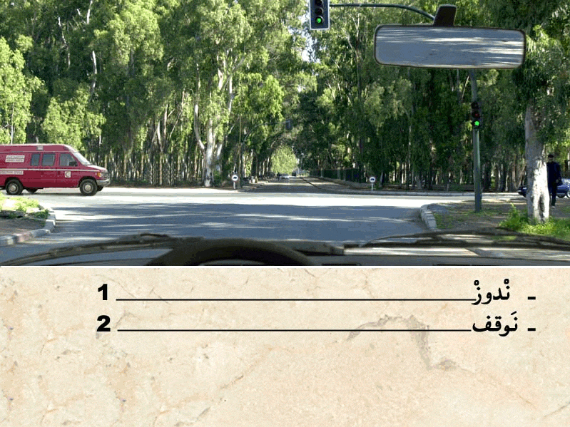
بيّن الجواب
الجواب الصحيح: 2
هذا العربة هي من العربات دات الأسبقية .
و مشعلة الضوء ديال الاستعجال و بالتالي واجب عليا نعطيها حق الأسبقية.
السؤال 18
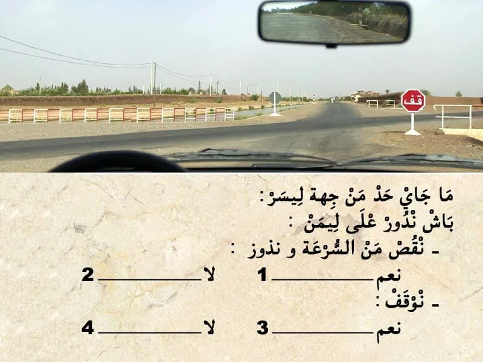
بيّن الجواب
الجواب الصحيح: 2 و 3
في هذا الحالة. عندي علامة قف .
- كتعلم بلي واجب عليا نوقف و نعطي حق الأسبقية للي جاي من ليمن و للي جاي من ليسر.
⛔ ما يمكنش ننقص من السرعة و ندوز .
✅ واجب عليا نوقف . تم نعطي حق الأسبقية في حالة كانت شي سيارة جاية من ليمن او ليسر عاد ندوز .
السؤال 19
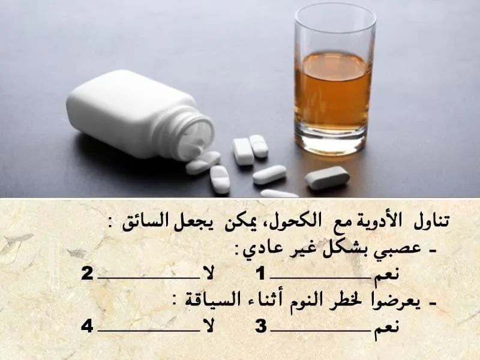
بيّن الجواب
الجواب الصحيح: 1 و 3
تتسبب بعض الأدوية المطروحة للصحة العامة للمواطنين في النعاس أو ضعف الرؤية اللذان يتعارضان تماما مع السياقة.
يتم تحديد هذه المخاطر المحتملة من خلال رسم تخطيطي في شكل مثلث صغيرعلى علب الأدوية:
🔺المستوى الأول: لا تُمنَع السياقة ولكن يجب قراءة التعليمات والتوصيات قبل الإستعمال.
🔺المستوى الثاني: يتعلق بالمواد التي لا ينصح بتناولها أثناء السياقة دون استشارة طبية.
🔺المستوى الثالث: يجب عدم تناول هذه الأدوية مطلقا قبل السياقة.
💡 يمكن أن تتسبب معظم الأدوية في آثار جانبية أكثر أو أقل خطورة، لذلك وقبل الشعور بها، خاصة أثناء السياقة، يكون من الأفضل الرجوع إلى قائمة الآثار الجانبية المدرجة على العلبة أو النشرة المرفقة بهذا الدواء.
السؤال 20

بيّن الجواب
الجواب الصحيح: 1
الإطارات الصيفية الإطارات التي يجب استعمالها عندما لا تكون حالة الطريق شتوية.
- الإطارات الشتوية:
- الإطارات المدببة = تماسك جيد على الثلج والطريق المجمد، ولكنها تتلف الطرق.
-الإطارات الاحتكاكية = تماسك جيد على الثلج وأقل على الطريق المجمد، تتلف الطرق بصورة أقل.
ما يختلف بين الإطارات الصيفية والإطارات الشتوية هي الأخاديد والتركيب.
إذا استعملت الإطارات الصيفية في فصل الشتاء فيمكن أن يصبح المطاط الصيفي الحساس صلباً وبالتالي تسوء خصائصه.
السؤال 21

بيّن الجواب
الجواب الصحيح: 3
هذا العلامة . هي علامة ديال الخطر .
- كتعلم على ممر ديال الراجلين .
و بالتالي الجواب الصحيح هو رقم 3.
السؤال 22
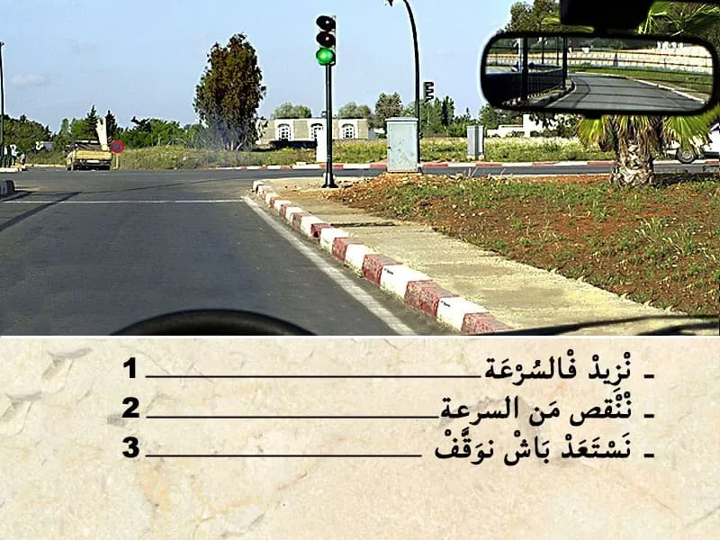
بيّن الجواب
الجواب الصحيح: 2
في هذا الحالة عندي ملتقى الطرق مع ضوء ثلاثي الألوان . و الضوء الأخضر شاعل .
في هذا الحالة واجب عليا ننقص من السرعة في حالة وجود خطر او الا شعل الضوء الاحمر .
السؤال 23

بيّن الجواب
الجواب الصحيح: 1
تتسبب بعض الأدوية المطروحة للصحة العامة للمواطنين في النعاس أو ضعف الرؤية اللذان يتعارضان تماما مع السياقة.
يتم تحديد هذه المخاطر المحتملة من خلال رسم تخطيطي في شكل مثلث صغيرعلى علب الأدوية:
🔺المستوى الأول: لا تُمنَع السياقة ولكن يجب قراءة التعليمات والتوصيات قبل الإستعمال.
🔺المستوى الثاني: يتعلق بالمواد التي لا ينصح بتناولها أثناء السياقة دون استشارة طبية.
🔺المستوى الثالث: يجب عدم تناول هذه الأدوية مطلقا قبل السياقة.
💡 يمكن أن تتسبب معظم الأدوية في آثار جانبية أكثر أو أقل خطورة، لذلك وقبل الشعور بها، خاصة أثناء السياقة، يكون من الأفضل الرجوع إلى قائمة الآثار الجانبية المدرجة على العلبة أو النشرة المرفقة بهذا الدواء.
السؤال 24
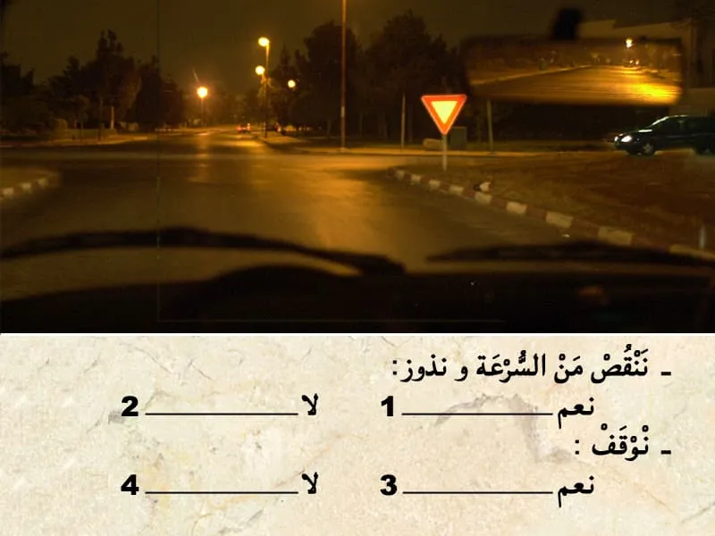
بيّن الجواب
الجواب الصحيح: 2 و 3
هذا العلامة ديال اعطاء حق الأسبقية. كتعلم بلي واجب عليا نعطي حق الأسبقية في هذا ملتقى الطرق .
✏️ و بالتالي واجب عليا نعطي حق الأسبقية للي جاي من جهت ليمن .
✏️و للي جاي من جهت ليسر .
و حتى للي جاي في الإتجاه المعاكس في حالة كنت غادي ندور على ليسر.
- في هذا الحالة كاين سيارة من جهت ليمن و بالتالي واجب عليا نوقف و نعطي حق الأسبقية.
السؤال 25
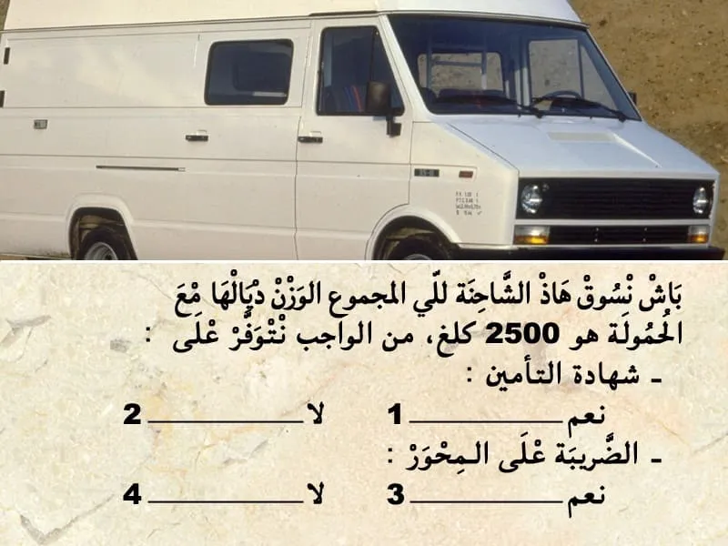
بيّن الجواب
الجواب الصحيح: 1 و 4
- الضريبة على الحمولة: كتفرض على العربات التي يتجاوز وزنها مع حمولتها 2000 كيلو= 2طن.
- الضريبة على المحور: كتفرض على العربات التي يتجاوز وزنها مع حمولتها 3000 كيلو = 3طن